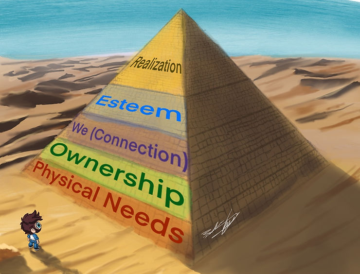
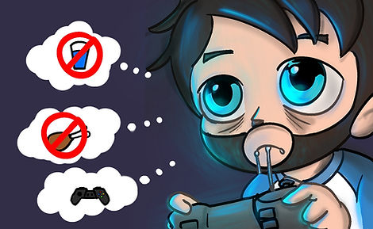
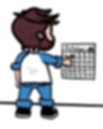
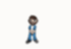

If you’ve ever felt like your ADHD is running the show instead of you, you’re not alone. For many of us, it’s not about missing something or being broken. It’s about learning how to channel what’s already there. That’s what the POWER Method is all about.
I created POWER to help people with ADHD move from chaos and self-doubt to clarity and confidence. It’s not a one-size-fits-all checklist. It’s a flexible framework that helps you understand yourself better and build systems that actually fit the way your brain works.
P = Physical (Your body fuels your brain)
Ever catch yourself staying up way too late playing video games, telling yourself “just one more round,” only to realize the sun’s starting to rise? That’s ADHD hyperfocus at work. Your brain locks onto something stimulating and completely forgets that your body has needs like sleep, water, or even food. It’s not a lack of discipline; it’s how our brains are wired.
But here’s the thing: when your body’s running on empty, your brain can’t do its job. You might find yourself foggy the next day, frustrated that you can’t focus, and reaching for more caffeine just to feel human again. The cycle continues until your energy crashes and burnout creeps in.

What if, instead of fighting your body, you started working with it? Try setting small cues to check in like a timer that reminds you to stretch, drink some water, or call it a night before the clock hits midnight. You can even gamify it: earn a “bonus life” every time you log off before you hit that exhaustion point. Over time, you’ll start noticing how much sharper and calmer your focus feels when your body and brain are on the same team.
Strategy: Instead of tracking your hours, start tracking your energy. Notice when you feel naturally alert or drained. Plan your hardest tasks (or your game nights) around your high-energy times. Use the lower-energy moments for rest or lighter work. When you start aligning your rhythms with your biology, you’ll find that focus becomes something you can sustain, not something you have to chase.
O = Ownership (Understanding, not blaming)
Ownership is not about forcing yourself to “do better.” It is about getting curious about what your brain needs in different moments. ADHD often tricks us into thinking every misstep is a moral failure, like missing a deadline means we are lazy, or forgetting a meeting means we do not care. But that is not true. Those are symptoms, not character flaws.

Imagine this: you miss another work deadline. In the past, you might have spiraled into frustration, replaying the mistake over and over. But this time, you pause and ask, “What actually got in my way?” Maybe the task felt overwhelming, maybe it was unclear where to start, or maybe you just did not have enough visual cues to stay on track. That is data, not failure.
The more you look at your patterns with curiosity instead of shame, the more power you gain to change them. Each observation gives you a clue about how your brain operates and how to set yourself up for success next time.
Strategy: End your day with a two-minute reflection: What worked? What did not? What do I need tomorrow? You can jot it in a notebook, record a voice note, or talk it out with someone. The point is not to judge yourself. It is to notice. Awareness builds control, and control builds momentum.
W = We (Connection keeps us grounded)
ADHD can make you feel like you are on an island. You tell yourself, “I should be able to do this on my own,” while secretly drowning in tasks and guilt. But here is the truth: connection is not a bonus for us, it is a lifeline.

Think about how much easier it is to stick with something when you know someone else is in it with you. Maybe you finally start showing up to the gym because a friend texts you each morning. Or maybe your messy kitchen magically gets clean when you join a virtual body-doubling session. That is not coincidence; it is community at work. Our brains crave shared energy.
Trying to self-motivate in isolation is like trying to jump-start a car with no cables. We need other people’s sparks to get going sometimes, and that is okay. Connection does not make you weak; it makes your executive function stronger.
Strategy: Build your “support crew” on purpose. Join an ADHD group, find an accountability buddy, or connect with a coach who understands your wiring. Be honest about what kind of support helps you most, whether that is gentle reminders, co-working, or just knowing someone is in your corner. You do not have to do this alone, and honestly, you were never meant to.
E = Esteem (Rebuilding the foundation)
Let's be real. Living with ADHD can wear down your confidence over time. Every forgotten appointment, late bill, or “Why can’t you just…” comment adds another crack in your self-esteem. Eventually, you start believing those stories about yourself.
But confidence is not about pretending everything is great; it is about recognizing how capable you already are, even when things get messy. When you finally remember to pay your bills on time, it is not just a win, it is proof that systems work when they are built for your brain. That deserves credit, not a shrug.
Start noticing those small victories that your inner critic dismisses. You sent that email you have been avoiding? Win. You showed up to your appointment on time? Win. You resisted doom-scrolling for 30 minutes and cleaned the kitchen instead? Big win. Each one is evidence that you are learning how to work with your wiring.
Strategy: Keep a “small wins” list somewhere visible. It does not have to be fancy, just a running log of moments that remind you that you are growing. On hard days, look back at that list. It is the antidote to your brain’s negativity bias, a reminder that progress is happening even when perfection is not.
R = Realization (Design your life to fit your brain)
Realization is the point where everything clicks. You stop trying to live like a neurotypical person and start creating systems that work for you. It is when you finally understand that ADHD is not a character defect; it is a different operating system with its own strengths and quirks.
Maybe you notice that you do your best work right before a deadline. Instead of beating yourself up for being “last-minute,” you start setting intentional mini-deadlines throughout your week so you can harness that focus without the panic. Or maybe you realize you are a novelty-powered person and boredom is your true enemy. So you start rotating between projects or changing your workspace to keep things interesting.
That is not cheating the system; it is building one. Once you embrace how your brain naturally works, you can stop wasting energy pretending to be someone else.
Strategy: Turn your self-awareness into structure. If you thrive on urgency, break projects into smaller time-boxed chunks. If you are visual, color-code your calendar or post reminders where you can see them. Treat your brain like a creative partner, not a problem to solve. Realization is freedom, the moment you stop chasing normal and start designing a life that fits.
How POWER Changes the ADHD Game
The POWER Method is not another quick-fix productivity trick or motivational slogan. It is a roadmap designed for real ADHD brains, the kind that thrive on creativity, curiosity, and bursts of momentum but struggle when life demands constant consistency. Instead of trying to “fix” how you work, POWER helps you understand how you work.
Most of us with ADHD have spent years trying to use tools and strategies that were never built for our wiring. We force ourselves into rigid systems, then beat ourselves up when they collapse. The POWER Method flips that script. It helps you build structure that fits your natural rhythm instead of fighting it. When you start aligning your routines with how your brain actually operates, focus stops feeling like a battle and starts feeling like flow.
The POWER Method can help identify what is really getting in their way, whether that is burnout, self-doubt, lack of structure, or simply trying to juggle too much at once. Together, we break things down into manageable pieces, create systems that actually stick, and reconnect you with the goals that matter most to you. Each element of POWER is personalized to your brain, your pace, and your purpose.
Imagine what it would feel like to finally have a plan that works because it was built for you, not in spite of you. That is what coaching through the POWER Method can do.
If you have been wondering whether ADHD coaching could help you find that balance, clarity, or sense of momentum again, let’s talk about it. I offer a free consultation where we can explore your goals, your challenges, and whether this approach feels like the right fit for you.
👉 Schedule your free consultation here
You Already Have the POWER to Reach Your Potential
You’ve always had it. ADHD coaching doesn’t give you something you’re missing. It helps you uncover the strengths that were there all along and learn how to use them with confidence.
If you’re ready to stop fighting your brain and start working with it, let’s talk. Your POWER is already waiting.